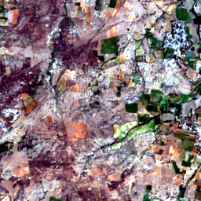
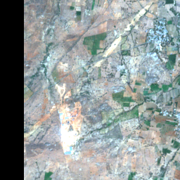
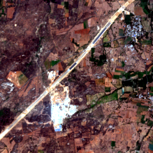

medium alert · real
Segment NHAI-NH544G-PKG1-S0008
Field verification · Download PDF Report
Responsible-use notice: This alert requests field verification. It is not an allegation or an automated enforcement decision.
Multi-Temporal Satellite Image Chips (Tile 43PGR)
Genuine 10-metre Sentinel observation chips verifying ground-truth progression vs stall.

1. Baseline (2023-02-15)
Pre-construction natural scrubland. No alignment visible.

2. Active Earthworks (2024-02-18)
Vegetation cleared; stripped bare soil & cut/fill formation.

3. Alerted Stall (2024-07-28)
Work halted; surface smoothing, weed regrowth, SAR flatline.
Why it fired
State: stall_candidate · Risk score: 0.708 · Confidence: 1.00
- activity remained below 35 for 2 consecutive clear observations
Activity components
| Signal | Raw | Normalized | Score points |
|---|---|---|---|
| vegetation_clearance | -0.135 | 0.000 | 0.00 |
| bare_soil_activity | -0.119 | 0.000 | 0.00 |
| built_up_activity | -0.134 | 0.000 | 0.00 |
| brightness_activity | -0.009 | 0.062 | 0.62 |
| vv_activity | 2.135 | 0.712 | 7.12 |
| vh_activity | 2.158 | 0.719 | 7.19 |
| linear_continuity | 0.150 | 0.150 | 2.25 |
Context
Rainfall: 4.0 mm · Observability: high
Optical scenes: S2B_43PGR_20231025_0_L2A
SAR scenes: S1A_IW_GRDH_1SDV_20231205T004007_20231205T004032_051512_0637C8_rtc
Evidence completeness
Status: complete
- None
Integrity
Evidence SHA-256
9d323eeecd1c348c81ddac32bacf7ff0ccb14c0d8b5bb55b66a8778ef7648172